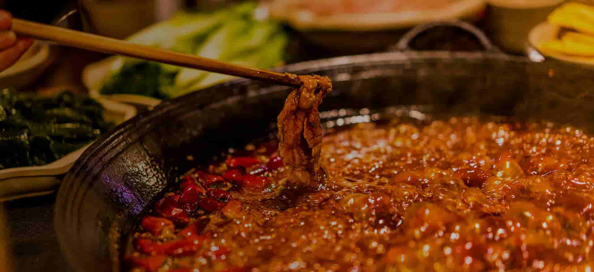

文化传承
传承川味文化 打造行业标杆
文化传承
传承川味文化 打造行业标杆
川菜的出现可追溯至秦汉，早在一千多年前，西晋文学家左思所著《蜀都赋》中便有“金垒中坐，肴隔四陈、觞以清酊，鲜以紫鳞”的描述。唐宋时期，川菜更为脍炙人口。诗人陆游曾有“玉食峨眉木耳，金齑丙穴鱼”的诗句赞美川菜。
在宋代已经形成流派，当时的影响已达中原。宋代孟元老著《东京梦华录》卷4《食店》记载了北宋汴梁（今开封）“有川饭店，则有插肉面、大燠面、大小抹肉、淘煎燠肉、杂煎事件、生熟烧饭”。元、明、清建都北京后，随着入川官吏增多，大批北京厨师前往成都落户，经营饮食业，因而川菜又得到了进一步发展，逐渐成为我国的主要地方菜系。
典藏馆以文物、典籍、图文陈列展示历史的川菜文化，游客可以了解川菜文化的起源、演变、发展及川菜文化的形成。

灶王祠是传统川菜文化，以及四川民俗文化的组成部分。在民间，灶王司职“上天言好事，下界保平安”。敬灶王，崇食尚饮，感悟“一餐一饭，当思来之不易”，珍惜生活，与自然与社会和谐共处。
老川菜馆一条街是川菜的“清明上河图”。游客将在畅游老四川街景民风中领略川西民居建筑风格，同时可以在独立私密包间亲自体验正宗川菜制作工艺。
老川菜馆一条街是川菜的“清明上河图”。游客将在畅游老四川街景民风中领略川西民居建筑风格，同时可以在独立私密包间亲自体验正宗川菜制作工艺。
老川菜馆一条街是川菜的“清明上河图”。游客将在畅游老四川街景民风中领略川西民居建筑风格，同时可以在独立私密包间亲自体验正宗川菜制作工艺。
老川菜馆一条街是川菜的“清明上河图”。游客将在畅游老四川街景民风中领略川西民居建筑风格，同时可以在独立私密包间亲自体验正宗川菜制作工艺。